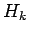
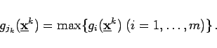
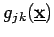
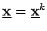
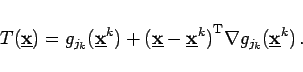
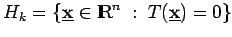
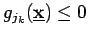
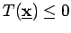
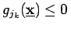
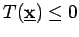

Die verschiedenen Verfahren unterscheiden sich in der Wahl der trennenden Hyperebenen . Beim Verfahren von KELLEY wird Hk auf folgende Weise bestimmt: Es wird jk derart gewählt, daß gilt
|  | (18.115) |
Die Funktion  besitzt im Punkt  die Tangentialebene
|  | (18.116) |
Die Hyperebene  trennt den Punkt  von allen Punkten
von allen Punkten  mit . Daher wird als weitere Restriktion für das (k+1)-te lineare Programm  gesetzt. Jeder Häufungspunkt
mit . Daher wird als weitere Restriktion für das (k+1)-te lineare Programm  gesetzt. Jeder Häufungspunkt  der Folge
der Folge  ist ein Minimalpunkt des Ausgangsproblems.
ist ein Minimalpunkt des Ausgangsproblems.
In der praktischen Rechnung zeigt das Verfahren eine geringe Konvergenzgeschwindigkeit. Außerdem steigt die Restriktionszahl ständig an (s. auch 18.10).